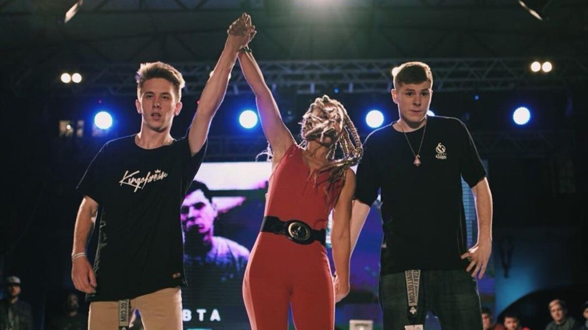
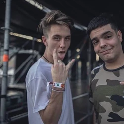
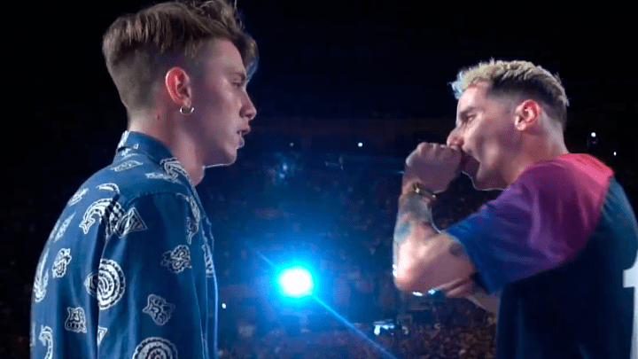

Walls conoció el rap a los 10 años, pero inició en competencias de freestyle en este año, con varias influencias como Invert (su referente), entre otros.
Inició en las batallas participando en competencias underground de su ciudad natal como GDA Street Battles y Kafre Rap, y otros torneos como King Battle Cieza, donde logró vencer a Danies en 16vos, al joven Joaking en 8vos, y cayó eliminado ante el malagueño FJ en 4tos.
También participó en una batalla de exhibición junto a uno de sus amigos en el freestyle, Cronos, enfrentándose al alicantino Zasko y su compañero, Compare Flow.
Inicios de Walls.
El murciano decidió participar en la Red Bull Regional de Barcelona, logrando su clasificación. Logró vencer a Thenewoldschool en los dieciseisavos de final, pasando a la siguiente instancia, donde se tendría que enfrentar a su referente en las batallas y campeón mundial de Red Bull 2014: Invert. Durante la batalla, con buenos punchlines por parte de ambos, Walls empezó a sobreponerse a su adversario, logrando clavar mejores punchlines inclinando la victoria hacia él: "Vengo para hacerlo porque yo manejo el ritmo, no pueden hacerlo si yo tengo el algoritmo, le he ganado al campeón del mundo haciendo hip-hop, lo que pasa es que a Red Bull le cuesta asumirlo!"
Walls también participó en la BDM Murcia, donde nuevamente, fue la sorpresa del evento. El oriundo de Murcia logró vencer a Loke sin muchas complicaciones, en 8vos. En los 4tos de final, hizo lo mismo con Cronos, llegando a semifinales. En semifinales, Walls tuvo que enfrentar a otra de las sorpresas, Robledo, a quién logró derrotar pasando a la final, donde tendría que enfrentarse al experimentado Navalha. Walls logró vencer a Navalha, consiguiendo su clasificación a la nacional de BDM. Aparte de esto, Walls dió una batalla de exhibición enfrentándose a Blon, y a Nitro.
Walls nuevamente siguió con las competiciones, esta vez, en Achorap Summer Águilas. En esta competencia, el murciano logró vencer a Dani en 8vos, logrando el pase a los 4tos de final, donde venció a Robledo, logrando llegar a las semifinales. En las semifinales, tendría que enfrentarse al histórico Babi the Blackbull, finalmente, Walls saldría vencedor en esta batalla. En la final, Walls tuvo que enfrentarse al barcelonés Blon, donde el murciano logró salir campeón tras una batalla un tanto ajustada, y con una decisión criticada por el resultado final.
Ya en noviembre del 2017, Walls participó en la BDM Nacional de España, donde nuevamente logró una de sus mejores participaciones. En los 8vos, logró vencer sin complicaciones a Torian, pasando a los 4tos de final. En los 4tos, Walls logró vencer al gallego Force, en una buena batalla. En semifinales, se vería las caras ante uno de los participantes de la FMS, Errecé, donde Walls salió vencedor. En la final, contra el campeón de la edición pasada, Hander, Walls logro coronarse campeón tras una reñida batalla contra el valenciano consiguiendo su cupo para la edición 2017 de BDM Deluxe, pero por problemas del viaje y la edad del murciano (17 en ese entonces) no pudo viajar a México, por lo que Hander tuvo que reemplazar a Walls.
Al inicio del año, Walls participó en Gold Battle Nacional, tras ya haber conseguido el campeonato en la regional de Murcia de la misma competencia. En dicho torneo, logró vencer a Neonath en 8vos, llegando a los 4tos, donde hizo lo mismo con Nasher. En semifinales, Walls tuvo que enfrentarse a Hander, quién logró vencer al murciano. En la batalla por el 3er lugar, Walls logró vencer sin complicaciones a Coletiyas. clasificados de la Regional de Barcelona para la nacional 2018.]] Después de haber perdido, Force lo eligió para hacer duplas en la final de la misma competencias, donde ambos batallarían ante Chuty y Blon, luego saldría el 1vs1 entre Chuty y Force y terminó ganando el primero.
Victoria de Walls en la Regional de Barcelona.
Walls volvió a participar en Red Bull, esta vez, inscribiéndose a la regional de Barcelona, donde nuevamente haría historia. En los 8vos, Walls logró vencer sin muchas dificultades a Eloy 393, en los 4tos de final, hizo lo mismo con Botta. En las semifinales, tendría que enfrentarse al experimentado Barón, en una de las mejores batallas, destacando ambos. En la final, ya clasificado a la nacional, tuvo que enfrentar a BTA, en la mejor batalla de aquella regional. Walls salió vencedor consiguiendo un nuevo título, posicionándose como uno de los favoritos para ganar la nacional.
Participó en Ghetto Dreams League, competencia organizada en México, que sería uno de los primeros eventos internacional, donde participaría Walls. El murciano estuvo en una batalla de exhibición enfrentándose al local Rapder. Ya en la competencia, Walls se enfrentó en un Fuego Cruzado contra Cacha, Rapder y Acertijo, emparejándose contra el chileno subcampeón internacional de Red Bull 2014, Kaiser. Walls fue derrotado por el chileno, impidiéndole avanzar a los 4tos de final.
En julio del 2019, Walls partió nuevamente como uno de los favoritos a ganar la nacional de España. Asumiendo ya un posible retiro, debido a que Walls quiere dedicar más tiempo a otros proyectos, participó en la nacional, donde en 8vos tendría a uno de los rivales más complicados de vencer: Gazir. El prometedor joven ganador de la regional de Alicante venía como uno de los candidatos a sorprender en la nacional, y pues lo hizo así. Walls logró tener un aceptable primer minuto, como su contrincante, pero en el 4x4, Gazir mostró un nivel muy elevado, superior al del murciano. Sorpresivamente, Gazir logró vencer a Walls, dejando eliminado a uno de los grandes favoritos, y generando polémica debido al resultado, ya que algunos seguidores indicaban que sería una clara réplica.
En Perú, Walls y Force lograron conectar de mejor manera consiguiendo el 4to lugar de la fecha, tras derrotar al chileno Kaiser y al mexicano Lobo Estepario en octavos, en cuartos al argentino Lit Killah y el español Zasko, cayendo en semifinales en una gran batalla contra el mexicano Aczino y el español Chuty para finalmente caer derrotados en la lucha por el 3er y 4to lugar frente a la dupla campeona de la fecha pasada, Stuart y Jaze.
Walls y Force en Perú.
Ya finalizando abril del 2019, se dió inicio a la tercera temporada de FMS España, donde Walls seguiría participando, aunque un tanto cuestionado por su ligero bajón de nivel.
Estuvo en la Fecha 4 de la FMS Internacional, donde en un resultado muy polémico hasta considerado para el mismo Walls, le ganaría a Lobo Estepario. Por ganar la Fecha 4, que habían sido las clasificatorias a La Gran Final, estuvo contra Skone a un nivel muy igualado, pero perdiendo. También es destacable su minuto de presentación, dejando un nivel muy alto.
Pelea internacional Skone vs Walls.
^Volver al inicio^